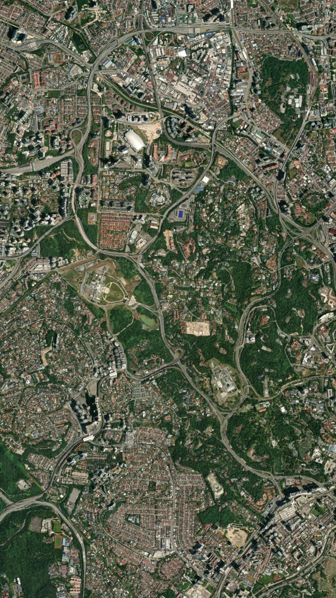
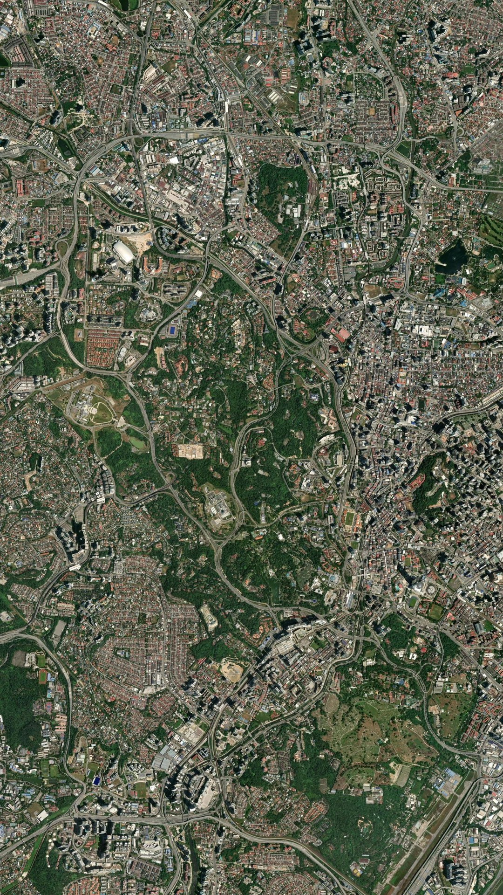
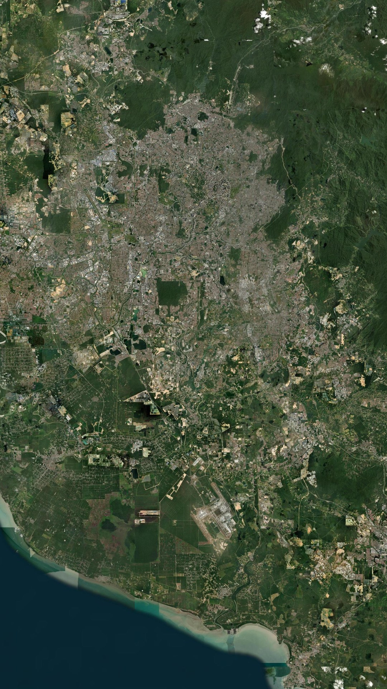
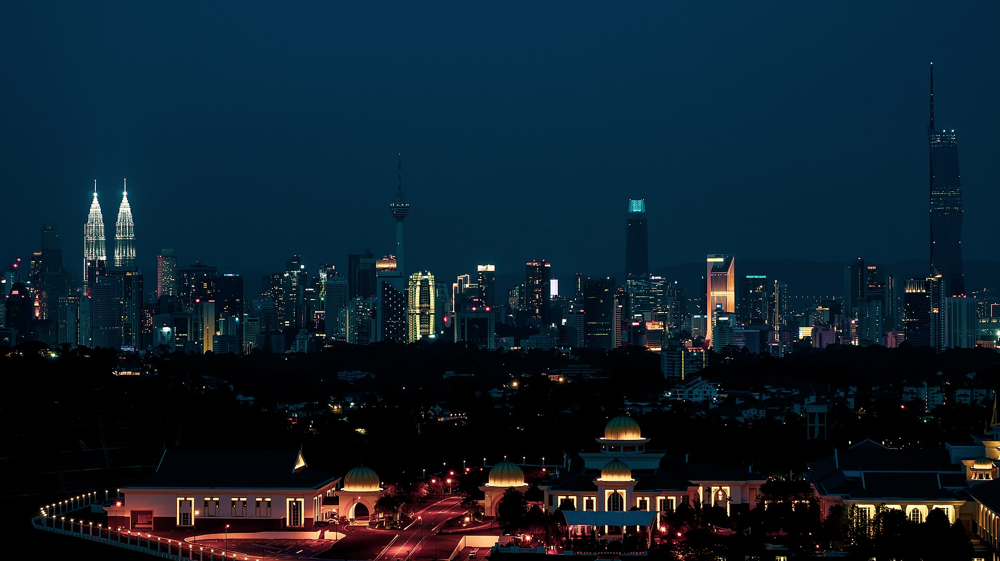
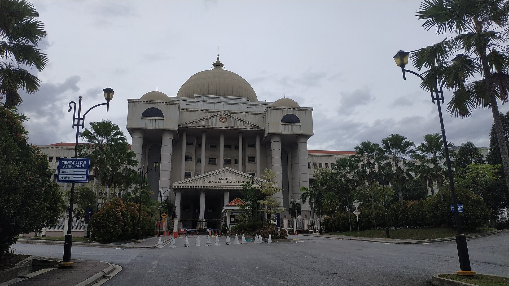

Istana Negara
Kompleks Mahkamah KL
Langgak DutaRUMAH NAJIB
≈ 2 KM
Jalan Duta · Kuala Lumpur
BADAN PEGUAM
vs TAHANAN
RUMAH
vs TAHANAN
RUMAH
Imej satelit: Esri, Maxar, Earthstar Geographics

Sekarang
TAHANAN RUMAH
18 Sept 2026
pengampunan bersyarat
pengampunan bersyarat
23 Ogos 2028
tamat
tamat
Imej satelit: Esri, Maxar, Earthstar Geographics

Wisma Badan Peguam
Mahkamah Tinggi KL
10 November 2026
FAIL SEMAKAN
KEHAKIMAN
KEHAKIMAN
Imej satelit: Esri, Maxar, Earthstar Geographics
Hujah Badan Peguam
TAHANAN RUMAH
BUKAN…
BUKAN…
PENGAMPUNAN
✕
PENANGGUHAN
✕
PEREMITAN
✕
Di luar Perkara 42?

PutrajayaJABATAN PEGUAM NEGARA
Mahkamah KL
12 November 2026
AGC BANTAH
“Keputusan Agong tak boleh dicabar”
Imej satelit: Esri, Maxar, Earthstar Geographics
Istilah undang-undang · Perkara 42
NON-
JUSTICIABLE
JUSTICIABLE
= mahkamah tak boleh
semak langsung
semak langsung

Lembaga Pengampunan WP · ke-64
MINIT MESYUARAT
Lembaga Pengampunan
SULIT
Dinyahklasifikasi
Foto: Azreey / Wikimedia Commons, CC BY-SA 4.0

Hujahan semua pihak
MAC 2027
17
Belum ada keputusan
Foto: Renek78 / Wikimedia Commons, CC BY-SA 4.0
Kau rasa?
MAHKAMAH BOLEH
SEMAK KEPUTUSAN
PENGAMPUNAN?
SEMAK KEPUTUSAN
PENGAMPUNAN?
Komen di bawah
Imej satelit: Esri, Maxar, Earthstar Geographics